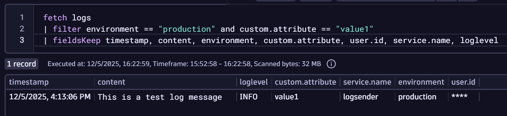

Redact Log Lines#
As already discussed in prior scenarios, logs can contain sensitive information. You've seen ways to drop (filter) out those logs. But what if you want to redact them, rather than drop them outright?
Imagine a log record is sent with a sensitive field called user.id. The app is written and you can't change it now. So how do you redact only that field?
{
"timestamp": "..."
"severity_text": "INFO",
"body": "This is a test log message",
"attributes": {
"custom.attribute": "value1",
"user.id": "12345",
"environment": "production"
}
}
scenario13.yaml shows the base OpenTelemetry collector configuration we'll use during this exercise.
Stop Previous Collector#
If you haven't done so already, stop the previous collector process by pressing Ctrl + C.
Start Collector#
Run the following command to start the collector:
source /workspaces/$RepositoryName/.env
/workspaces/$RepositoryName/dynatrace-otel-collector --config=/workspaces/$RepositoryName/scenario13.yaml
Generate LogRecord#
You will use a small Python application to generate and send a correctly formatted log record then send it via gRPC to the collector on port 4317.
python -m venv .
bin/activate
pip install -r scenario13-requirements.txt
python logsender.py
You should see lots of output while the required OpenTelemetry packages are installed, then: Log sent successfully!
Validate Data in Collector Output#
Switch terminals back to the collector and you should see output like this.
Notice how the user.id attribute is now redacted with ****
2025-12-05T16:13:03.912+1000 info Logs {"resource logs": 1, "log records": 1}
2025-12-05T16:13:03.914+1000 info ResourceLog #0
Resource SchemaURL:
Resource attributes:
-> telemetry.sdk.language: Str(python)
-> telemetry.sdk.name: Str(opentelemetry)
-> telemetry.sdk.version: Str(1.39.0)
-> service.name: Str(logsender)
ScopeLogs #0
ScopeLogs SchemaURL:
InstrumentationScope __main__
LogRecord #0
ObservedTimestamp: 2025-12-05 06:13:03.6190191 +0000 UTC
Timestamp: 1970-01-01 00:00:00 +0000 UTC
SeverityText: INFO
SeverityNumber: Info(9)
Body: Str(This is a test log message)
Attributes:
-> custom.attribute: Str(value1)
-> user.id: Str(****)
-> environment: Str(production)
Trace ID:
Span ID:
Flags: 0
This is the basics. There are a lot more options available in the redaction processor documentation
View Data in Dynatrace#
Tip
Right click and "open image in new tab" to see large image

Open a new notebook (or add a DQL section to an existing notebook). The Dynatrace Query Language below:
- Fetches all logs
- Then filters these logs to keep only those where the field
environmentequalsproductionand the fieldcustom.attributeequalsvalue1 - Then visually displays only the
timestamp,content,environment,custom.attribute,user.id,service.nameandloglevelfields
Notice how the user.id field is ****
fetch logs
| filter environment == "production" and custom.attribute == "value1"
| fieldsKeep timestamp, content, environment, custom.attribute, user.id, service.name, loglevel
Click the Run button on the DQL tile. You should see the new data.